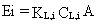
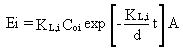
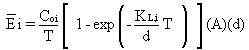
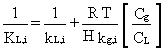
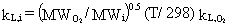
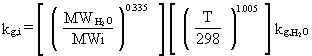

2.9 SURFACE IMPOUNDMENTS
EPA's (1988, 1990) model for computing volatilization rates from surface
impoundments is implemented in the user-interface (AG-VCASE = 6) of MEPAS
3.n versions. Surface impoundments include ponds (solar evaporation, disposal,
or holding), holding tanks, treatment tanks, or any other containment storing
or treating of liquid waste. Surface impoundments may hold aqueous type
waste or a waste consisting of a mixture of organic substances. The surface
impoundment emission model presented in this section is applicable when
there is a pool of the liquid containment on the surface of a structure.
This model is no longer applicable when volatilization of the contaminant
has developed a dry zone (e.g., a layer without any liquid-phase contaminant
at the surface). When the dry zone is developed on the entire surface of
the contamination, the physical condition relating to volatilization resembles
contaminated soil and the emission rate can be estimated with one of the
contaminated soil models.
MEPAS uses a model for estimating the emission rates from surface impoundments
with undisturbed surfaces because disposal ponds at hazardous waste sites
do not normally provide forced agitation on the surface. However, the model
provided can be readily adapted to the surface impoundments with turbulent
surfaces by simply modifying the values for mass transfer coefficients.
The model for predicting the emission rate is based on the two-resistance
theory, which assumes that the resistances to volatilization from the bulk
of the liquid to the atmosphere are mainly in the liquid phase and the
gas phase as indicated in textbooks and publications (Thibodeaux 1979;
Hwang 1982; Mackay and Leinonen 1975). The equation for estimating the
emission rate is

(28)
where
Ei = emission rate of constituent i (g/s)
KL,i = overall mass-transfer coefficient for constituent i expressed
in the liquid-phase concentration (cm/s)
CL,i = liquid-phase concentration of constituent i (g/cm3)
A = area of surface impoundment from which emissions occur (cm2).
Equation 28 is a steady-state emission equation and applies when the amount
of the constituent i does not change with respect to time. When the amount
of the contaminant is finite in the surface impoundment, the emission rate
would decrease as the contaminant concentration in the surface impoundment
decreases. Equation 28 can be solved as a transient problem for the time-dependent
emission rate (Mackay and Leinonen 1975):

(29)
where
Coi = initial concentration of constituent i in the surface impoundment (g/cm3)
d = depth of waste liquid in the surface impoundment (cm); the depth can
be replaced by V/A where V = volume of waste liquid in the surface impoundment
(cm3)
t = time (s).
The average emission rate (Ei)
over a time period, T seconds, can be obtained by integrating Equation
29 over time:

(30)
The overall mass-transfer coefficient can be expressed in either liquid-
phase or gas-phase concentration. Equation 28 uses the liquid-phase concentration.
When the overall mass-transfer coefficient based on the gas-phase concentration
is used in Equation 28, the gas-phase concentration of constituent i in
equilibrium with the liquid phase concentration in the surface impoundment
should be used. The overall mass-transfer coefficient relates the volatilization
rate from liquid to air. The overall liquid-phase mass transfer coefficient
of the constituent can be estimated using a method presented by Hwang (1982):

(31)
where
kL,i, kg,i = individual
liquid-phase and gas-phase mass transfer coefficients, respectively (cm/s)
H = Henry's Law constant (m3 atm/mole) in the database
R = gas constant (8.2 x 10-5 m3 atm/mole-° K)
T = temperature (° K)
Cg = molar density of gas (g mole/cm3); Cg
= 4.1 x 10-5 g mole/cm3
CL = molar density of waste liquid (g mole/cm3);CL = 1/18 for aqueous waste.
In Equation 31, the conversion factor Cg/CL
= 7.4 x 10-4 is necessary in the right-hand side to convert
gas-phase units to liquid-phase units.
For constituent i, the individual mass transfer coefficients can be estimated
by reference to constituents whose base values are known. Experiments by
Owens et al. (1964), Smith et al. (1979), and Thibodeaux (1978) used oxygen
as a reference compound for liquid-phase mass transfer and water vapor
as a reference for gas-phase mass transfer. Hwang (1982) used equations
derived by Cohen et al. (1978), Mackay and Matsugu (1973), Owens et al.
(1964), Thibodeaux (1978), and Reinhart (1977) to obtain equations for
individual liquid- and gas-phase mass-transfer coefficients for a given
constituent.
The equation for computing individual liquid-phase
mass-transfer coefficients for natural surfaces is

(32)
where
kL,i = individual liquid-phase mass-transfer coefficient (cm/s)
MWO2= molecular weight of O2 (32 g/g-mol)
MWi = molecular weight of constituent i (g/g-mole)
T = annual average air temperature (° K)
kL,O2 = individual liquid-phase mass transfer coefficient for O2 at 25° C (cm/s).
Hwang (1982) evaluated
the individual liquid-phase mass-transfer coefficient for oxygen at 25°
C for natural and turbulent surfaces; the coefficient values are 2.2 x
10-3 cm/s for natural surfaces and 2.3 cm/s for turbulent surfaces.
The equation for individual gas-phase mass-transfer
coefficients for natural surfaces is

(33)
where
kg,i = individual gas-phase mass-transfer coefficient (cm/s)
MWH2O = molecular weight of H2O (18 g/g mole)
MWi = molecular weight of constituent i (g/g mole)
T = annual average air temperature (° K)
kg,H2O = individual gas-phase mass-transfer coefficient for H2O at 25° C (cm/s).
Hwang (1982) computed individual gas-phase
mass-transfer coefficients for water at 25° C of 1.4 cm/s for natural
surfaces and 23.2 cm/s for turbulent surfaces.